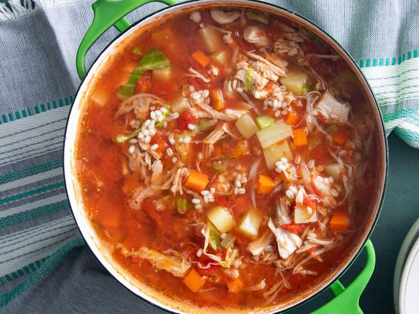

Leftover Turkey Soup

Description
A turkey carcass soup is the answer when you don't
want to waste a single bite of turkey. This is a
delicious soup and one of my favorites. If you want to
freeze some, leave out the potatoes.
Step away from the trash can! Put what's left of your
holiday meal to good use by making a hearty turkey
carcass soup. This wholesome recipe is not only
incredibly delicious and wholesome, it's a great (and
budget-friendly) way to reduce food waste.
Ingredients
- 1 turkey carcass
- 4 quarts water
-
1 (28 ounce) can whole peeled tomatoes, chopped
- 6 small potatoes, diced
- 4 large carrots, diced
- 1 large onion, diced
Steps
-
Place turkey carcass into a large soup pot; pour in
water and bring to a boil over medium heat. Reduce
heat to a simmer, and cook until the remaining meat
falls off the bones, about 1 hour.
-
Remove turkey carcass from the pot. Remove and chop
any remaining turkey meat. Discard carcass.
-
Strain broth through a fine mesh strainer into a
clean soup pot. Add chopped turkey to the strained
broth and bring to a boil.
-
Reduce heat and stir in tomatoes, potatoes, carrots,
onion, celery, cabbage, barley, Worcestershire
sauce, salt, parsley, basil, bay leaf, pepper,
paprika, poultry seasoning, and thyme. Simmer until
vegetables are tender, about 1 more hour.
- Remove bay leaf before serving.